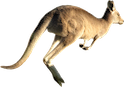

A
U
S
T
R
A
L
I
A
Trykk her for info om australia
Australia strekker seg fra ca 4000km fra vest til øst, og ca 3200km fra sør til nord. Det er verdens minste kontinent og det består i hovedsak av 3 forkjellige biomer, disse er ørkener, gressletter og skoger. Du vil finne det meste av infrastrukturer og byer langs kysten, her lever 90% av befolkningen. En liten fun fact, det vil ta ca 29 år å besøke en ny australsk strand hver dag, da det er 10.685 strender.
